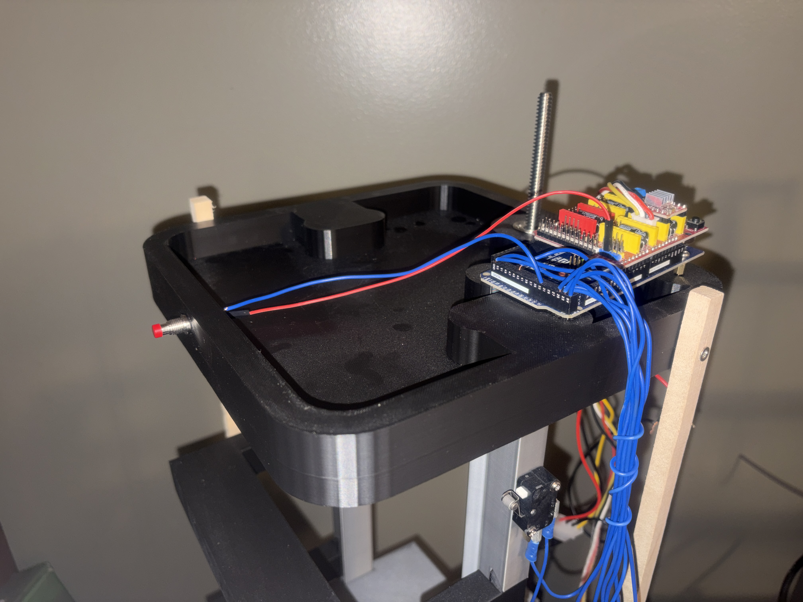

Project Overview
This elevator was designed as a compact working vertical transport system with four floors, a motor-driven lift, floor request handling, and a controlled door sequence. Rather than treating it like a fixed one-off build, I designed the structure to be modular so the same system can be scaled upward with additional floor sections.
The current version uses a vertical lead screw to move the elevator car, guided by a stacked structural frame and controlled by an Arduino Mega. Floor requests are handled in software, the car stops at commanded levels, the door opens on arrival, and the system returns to its home position when idle.
What I Did
- Designed the elevator structure and mechanical layout
- Built the physical assembly and integrated the electronics
- Programmed the floor request and movement logic
- Implemented door timing and hold-open behavior
- Created a modular layout that can be extended to more floors
Final Build

Working Physical System
The final build centers around a vertically driven carriage system with a compact footprint and clearly separated floor levels. The frame was built so additional height can be added in a repeatable way rather than redesigning the entire system from scratch.
That modularity is one of the strongest parts of the design. In its current form the elevator serves four levels, but the overall structure can be expanded by increasing the lead screw length, extending the guide structure, and repeating the side support and floor sections.
Designed for Modularity
Scalable Architecture
The elevator was not laid out as a single sealed model. It was built around repeating structural sections so more floors can be added without changing the entire concept. The same overall system can be extended by:
- using a longer lead screw for additional vertical travel
- adding more side support sections to maintain alignment and rigidity
- stacking additional floor modules above the existing frame
- expanding the floor-position values in code for new stop locations
- adding more call inputs and indicators as the system grows
Why That Matters
A lot of small school projects are built only to meet one exact requirement once. This one was designed more like a platform. The mechanical structure, motion system, and control logic all support expansion, which makes it a much stronger engineering project than a fixed mockup.
That also made it easier to think about future improvements like more floors, a cleaner enclosed wiring path, improved side bracing, additional sensors, and a more refined user interface.
Electronics + Controls

Arduino-Based Motion Control
The system is driven by an Arduino Mega with a stepper motor driver controlling the vertical lift and a servo-based door sequence running when the car reaches a floor. The control logic handles floor requests, travel direction, stopping behavior, and the return-to-home routine.
The software tracks floor positions and sends the carriage to the requested level, then runs the door cycle and waits for the next request. If no request remains, the elevator returns to the home floor after an idle delay. That makes the project a combination of mechanical design, embedded programming, and system integration. :contentReference[oaicite:1]{index=1}
Lift Mechanism

Lead Screw Driven Vertical Motion
The elevator uses a lead screw driven by a NEMA 17 stepper motor to produce controlled vertical movement. That setup gives repeatable positioning and fits the scale of the system well.
Because the motion is defined in code by floor positions, scaling the system upward is mainly a matter of extending the travel hardware and adding new floor coordinates. That is another reason the modular structure matters: the mechanical and software architecture both support expansion.
System Behavior
Floor Request
A floor call is registered through the control inputs and added to the active request state.
Car Movement
The stepper-driven lift moves the car to the target position based on stored floor coordinates.
Door Cycle
When the car arrives, the door opens, remains open for a timed interval, and responds to hold-open input.
Idle Return
After use, the elevator returns to its home floor when no additional requests remain. :contentReference[oaicite:2]{index=2}
Future Additions
Planned Video Demo
The page is already set up for a demo clip. Once you have a cleaned-up video, just drop it in
as elevator-demo.mp4.
Next Improvements
- add a polished demo video of the completed system
- reintroduce final CAD visuals when exported from the original file
- improve cable management and enclosure finish
- expand the frame to support additional floors
- add more sensors, indicators, and UI feedback
Project Summary
This project combines CAD-based design thinking, 3D-printed mechanical construction, embedded programming, and real hardware integration in one system. The biggest engineering strength of the build is that it is not locked to one exact size or one exact layout. The elevator works as a modular platform that can be extended into a taller system by lengthening the drive and repeating the support structure.
In other words, this was not just a one-time build to hit a requirement. It was designed as a working foundation for something larger.